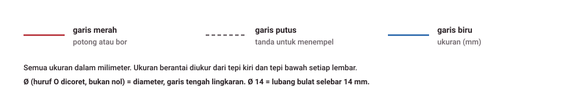

Siapkan bahan dan alat
± 15 menit| Bahan | Jumlah | Catatan |
|---|---|---|
| PVC board 3 mm | ± 570 cm² (± 24 x 24 cm) | 15 jenis potongan; pelat dudukan dan pipi dari PVC hitam |
| Tutup cat semprot Ø 65 | 1 | dipotong 22 mm dari muka |
| ESP32 NodeMCU-32S 38 pin, TCS34725, OLED 0,96 inci I2C | 1 set | sudah ada |
| Busa ati / EVA lunak hitam | 3 lembar 78 x 78 x 10 mm | penekan daging |
| Kertas beludru hitam (flok) | ± 20 x 20 cm | pelapis tutup cat; pengganti: flanel hitam |
| Engsel kupu-kupu 25 mm | 2 | dengan 8 baut M3 x 10 + mur |
| Kait kotak kecil | 1 | pengunci depan |
| Tali nilon | 15 cm | pembatas buka ± 100° |
| Baut M2,5 x 10 hitam + mur | 2 | sensor |
| Baut M2 x 10 + mur | 4 + 8 | OLED: 1 mur ganjal + 1 mur pengunci per baut |
| Kabel serabut 24-26 AWG: merah, hitam, kuning, biru, hijau | ± 85 cm total | boleh kabel dupont yang dipotong soketnya; panjang tiap kabel di tabel kabel |
| Selongsong panas Ø 2 mm | 14 x 15 mm | 1 per titik solder |
| Busa dobel tape 3 mm, lem PVC, silikon hitam, selotip hitam | sedikit | |
| Kertas HVS putih doff + beludru hitam | untuk tatakan kalibrasi | |
| Plastik wrap | 1 lembar baru per sampel | pelindung busa |
Alat: Cutter besar + penggaris besi 30 cm, penggaris siku, jangka sorong (sangat membantu), spidol halus, selotip kertas, gergaji besi kecil, bor tangan dengan mata bor 2, 2,5, 3, 4, 8 dan 12 mm (atau mata bor bertingkat), kikir bulat dan setengah bulat, amplas 240, solder 30-60 W + timah 0,8 mm, pemanas atau korek untuk selongsong, tang kupas kabel, penjepit buaya (tangan ketiga), multimeter, lem PVC atau lem tembak, silikon hitam.
